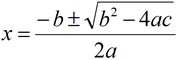

Returning Structures
Let's look at a variation on one of the problems given earlier on a Programming Exam. In the original exam, the two roots of the quadratic equation were returned via a pair of output parameters. Now that we have structured types, we can write the function a little more naturally, by returning structure.
Write a function
quadratic()which computes roots of quadratic equations. A quadratic equation is one of the form:ax2 + bx + c = 0.Your function has three input parameters, the integer coefficients
a,b, andc. The function returns astructcontaining twodoublemembers:root1androot2. Assume that the function has two real roots. The quadratic formula is:
Using structures, you could write the function like this:
struct Roots { double root1, root2; };
Roots quadratic(int a, int b, int c)
{
double determinant = b * b - 4 * a * c;
Roots result;
result.root1 = (-b + sqrt(determinant)) / (2 * a);
result.root2 = (-b - sqrt(determinant)) / (2 * a);
return result;
}Then, you could call the function like this:
Roots r = quadratic(1, -3, -4);
cout << "roots->" << r.root1 << ", " << r.root2 << endl; This course content is offered under a
CC
Attribution Non-Commercial license. Content in this course
can be considered under this license unless otherwise noted.
This course content is offered under a
CC
Attribution Non-Commercial license. Content in this course
can be considered under this license unless otherwise noted.